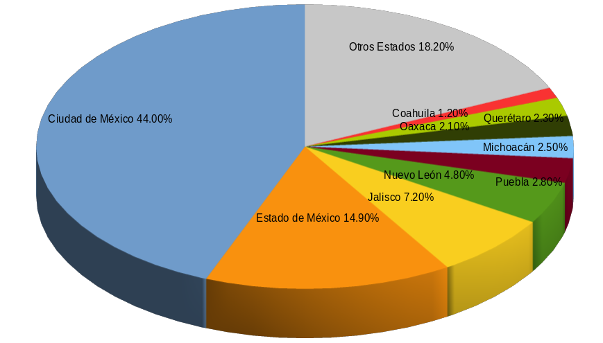

La importancia de la Industria Automotriz es clave para la Laguna ya que es generadora de empleos y dinamiza la productividad. Representa 62% del valor agregado censal bruto, el 31% del personal ocupado y 61% de la producción bruta total. Ésta se divide en Industrias Metálicas Básicas, Fabricación de Maquinaria y Equipo y Fabricación de Equipo de Transporte.
Pero además dentro de este relevante sector, es importante destacar el surgimiento de la tecnología híbrida que ha sido diseñada para disminuir los efectos de la combustión en el medio ambiente.
Los vehículos han evolucionado y mejorado a través de los años en: autos de combustión interna, eléctricos, de hidrógeno o híbridos. Es necesario evaluar el desempeño de los vehículos automotores en la Zona Metropolitana de la Laguna, por la fuerte presencia de emisiones en los índices de contaminación atmosférica. Los automóviles híbridos representan una oportunidad para disminuir esta contaminación.
En una investigación que se llevó a cabo en Monterrey con un vehículo híbrido 2006 y un grupo de cuatro vehículos de combustión interna convencional, los resultados mostraron que la eficiencia en el uso de combustible para vehículos convencionales es de entre 30 y 40%. Por lo tanto, el uso de vehículos híbridos - que apagan el motor de combustión interna al estar en alto total - tiende a mejorar el uso de energía, obteniendo un aumento en el rendimiento en condiciones reales de manejo en una ciudad grande de México, y se encontró que su rendimiento es 11% mayor en ciudad y 6% mayor en carretera respecto a vehículos convencionales.
Es el momento de migrar a nuevas tecnologías, sin embargo una desventaja que tienen los coches híbridos al momento de la compra - aun contando con las ayudas del Estado - es el precio, son más caros que los convencionales, por ejemplo, un auto nuevo convencional cuesta en promedio $250,000, mientras un auto hibrido cuesta $362,300 pesos. No obstante, en los últimos años se ha visto un aumento en el número de autos híbridos y eléctricos, y aunque no lo parezca, en algunos modelos comienza a bajar el costo.
Por otro lado el mantenimiento de un coche híbrido puede ser hasta un 50 por ciento inferior al de uno de gasolina y diésel. Los sistemas híbridos son más económicos de mantener en comparación con el sistema de combustión interna, ya que prescinden de algunos elementos cuyo mantenimiento implica su remplazo, caso de embrague, alternador, motor de arranque y correa de distribución. Además el precio de la gasolina y la contingencia ambiental es factor para que la venta de autos híbridos se dispare en México.
Ventas en aumento
La Asociación Mexicana de la Industria Automotriz (AMIA) informó que los primeros dos meses del año se vendieron en México 1,288 autos híbridos.
También reporta que durante junio 2017 la venta de vehículos híbridos y eléctricos fue de 791 unidades. Las ventas se componen por 9 vehículos eléctricos y 782 híbridos. En el primer semestre de 2017 se comercializaron 5,040 vehículos híbridos y eléctricos, incrementándose un 78.1% con respecto a la primera mitad de 2016.
La Ciudad de México tuvo la mayor comercialización de vehículos híbridos y eléctricos, con 44 por ciento de participación, seguida por el Estado de México con 15 por ciento; Jalisco con 7.2 por ciento; Nuevo León 4.8; Puebla 2.8; Michoacán 2.5; Oaxaca 2.1, Querétaro con 2.3 y Coahuila 1.2 puntos porcentuales.
En la proporción de comercialización de vehículos híbridos y eléctricos de enero a junio del 2017, Torreón cuenta con 28 de los 57 autos híbridos y eléctricos que circulan en Coahuila. Torreón representa el 49.12 % de Coahuila y el .06% a nivel nacional en la venta de este tipo de autos.
Los vehículos híbridos y eléctricos están muy por encima de los autos de combustión, expulsan menos gases contaminantes, funciona para recorridos cortos con solo el motor eléctrico, por ejemplo en la ciudad que es donde se produce el mayor gasto de combustible.
En la ZML ha sido lenta la marcha de este rubro de movilidad verde, debido a factores como pocos incentivos gubernamentales, alto costo y por desconocimiento de los consumidores sobre los beneficios económicos y sobre todo ambientales que generan. No solo es responsabilidad del gobierno, también los fabricantes implementar un programa con tasas bajas de interés para autos eléctricos e híbridos.
Proporción de comercialización de vehículos híbridos y eléctricos en México en 2017

Proporción de comercialización de vehículos híbridos y eléctricos de enero a junio de 2017
Aumento de 78.1% con respecto a la primera mitad de 2016.
- México 5,040
- Coahuila 57
- Torreón 28
Mantenimiento de un vehículo
| Tipo Motor | Vehículo "A" | Vehículo "B" |
|---|---|---|
| Diésel | 102,284 | 120,459 |
| Gasolina | 95,422 | 88,498 |
| Hibrido | 55,756 | 57,485 |
Coste total para un rodaje de 120.000 kms u 8 años incluyendo mantenimiento y neumáticos
Comparación de vehículos híbridos y de combustión interna
| Concepto | Vehículo hibrido | Combustión interna |
|---|---|---|
| Rendimiento promedio | 51% | 40% |
| Kilómetros recorridos por litro | 16.5 km/L | 11.9 km/L |
| Emisiones de dióxido de carbono | 191.84 g/km de CO2 | 308.14 g/km |
| Monóxido de carbono | 0.21 g/km de CO | 0.79 g/km |
| Hidrocarburos no quemados | 0.02 g/km | 0.12 g/km |
| NOX | 0.006 g/km | 0.11 g/km |
| Precio | $362,300 | $250,000 |